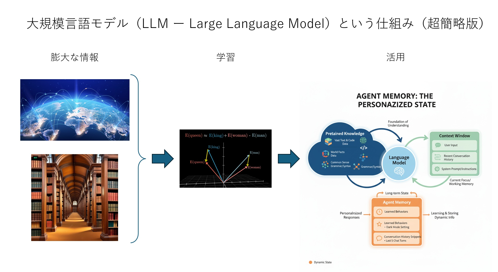
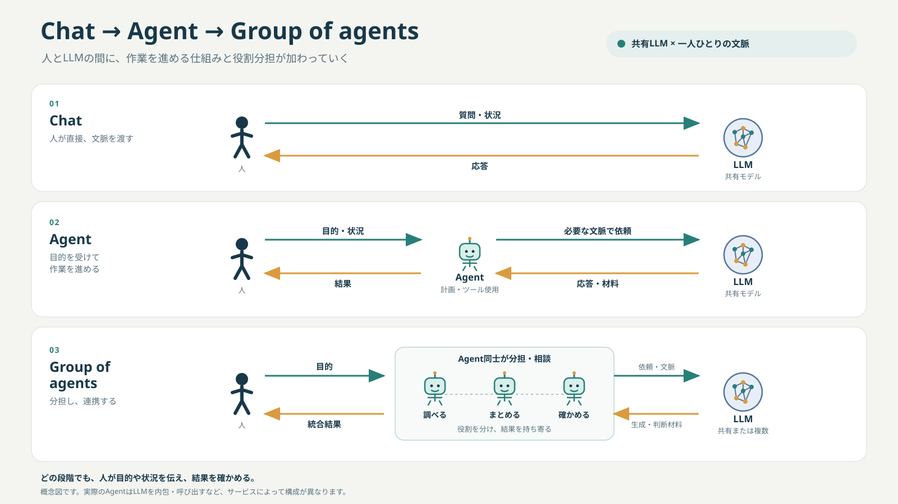
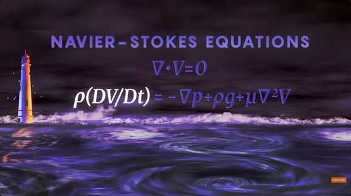
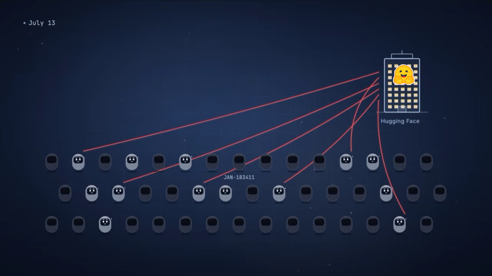
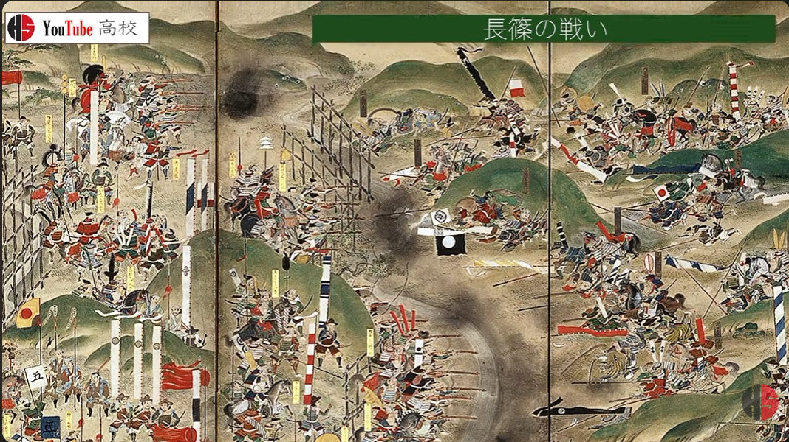
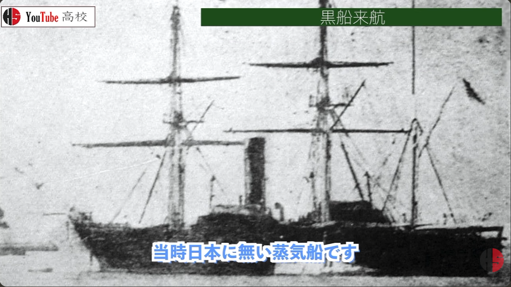
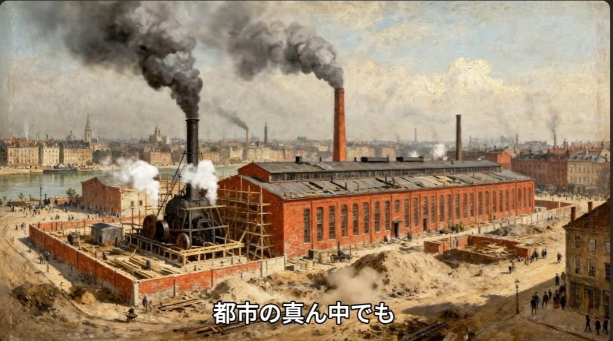

AIは鉄砲か、黒船か、産業革命か？
2026年11月28日 修道25回同期会・基調メッセージの参考ページ
AIの新製品の優劣ではなく、なぜできることが広がり、社会にどんな影響をもたらすのかを考えます。
一つの言語モデルが答える段階から、ツールを使って仕事を進めるAgent、役割を分けて連携するGroup of agentsへ。そこに生まれる力と、確認・責任の課題を、図と事例を手がかりに考えます。
1. LLM――AIが言葉やコードを作れる土台
まず、昨年の準備幹事会で使った「大規模言語モデル（LLM）の仕組み」の図を見ます。大量の文章やコードなどから言葉やコードのパターンを学んだモデルが、利用時には入力された指示や文脈を踏まえて、文章やコードを生成するという大枠を示しています。

図の読み方：中央のベクトル図は仕組みをイメージするためのもので、実際のモデル内部をそのまま描いたものではありません。また、右側の「記憶」は会話履歴やサービス側の保存機能などを含む概念です。会話のたびに基盤モデル自体が自動で再学習する、という意味ではありません。
「世界中の知識が全部詰まっている」というより、学習した情報の一部をモデルの中のパターンとして利用している、と考えるのが近いでしょう。内容を完全に覚えているわけでも、常に正しい答えを取り出せるわけでもありません。
なぜ、アプリを作れるのか
- モデルは、学習した文章・コードや設計例から、よくある書き方や構造を身につけています。
- 人は作りたいものを日常の言葉で説明でき、モデルはその説明に合うコードの形を提案できます。
- アプリ作成サービスでは、コードの編集だけでなく、実行・画面表示・修正を助ける道具も組み合わせることがあります。結果を見ながら作り直せるため、専門家でなくても試作品を形にしやすくなります。
- ただし、これはLLMだけで完成品が保証されるという意味ではありません。動作確認、個人情報の扱い、安全性、公開後の保守は別に考える必要があります。
2. ChatからAgent、Group of agentsへ
LLMを単体で使うだけでなく、目標を受けて手順を組み立て、検索やプログラムなどのツールを使い、結果を見ながら作業を進める仕組みがAgentです。複数のAgentに調査・整理・確認などを分担させ、結果を持ち寄る構成もあります。

役割分担や並行作業によって、個人では難しい仕事を速く進められる可能性があります。一方、途中の誤りが次の作業に引き継がれたり、ツールへの権限を通じて現実の操作につながったりすることもあります。重要なのは「AIが意思を持って暴走する」と決めつけることではなく、何を任せ、どんな権限を与え、どこで人が確かめるかを考えることです。
3. 変化を想像するためのキー事例
-
誰でもアプリを作れるようになる？
クローズアップ現代「誰でもアプリが作れちゃう！ ＡＩ自作アプリの光と影」（2026年11月18日放送）を入口に、アプリ開発の裾野が広がる可能性と、作った後の安全性・品質・保守を誰が担うのかを考えます。
-
Navier–Stokes問題――AIの「証明」とは何か
Navier–Stokes方程式は、水や空気など流体の動きを表す方程式です。OpenAIは2026年9月、滑らかな流れから始め、滑らかな外力を加える条件でも、速度が有限時間で際限なく大きくなる「特異点」が生じ得る、という解答を発表しました。この問題はクレイ数学研究所のミレニアム懸賞問題の一つで、懸賞金は100万ドルです。ただし、OpenAIの発表が賞金問題の解決として認定済みという意味ではありません。

動画中の一場面を引用。Quanta Magazine, “Why Navier-Stokes Pushes Math and Physics to the Edge”（YouTube）。画像をクリックすると動画を開きます。 なぜ、AI群で取り組めたのか
OpenAIの説明によれば、数学性能を高めた社内モデルに、問題の異なる形を割り当てたAgent群を並行して動かしました。Agentは検索用の資料やコード実行の道具を使い、別々の方向を探ります。関連するEuler方程式の問題で手がかりを得ると、その結果を他のAgent群にも共有し、Navier–Stokes問題に計算資源を集中させました。約1万のAgentが約88時間探索し、証明のLean形式化と検証にはさらに約17時間を要した、と報告されています。
大筋の「なぜ」：人間が積み上げてきた数学の知識を土台に、強化されたモデルが証明の候補を作り、Agent群が複数の道筋を大量・並行に試し、見込みのある手がかりを共有できたからです。「人間が何十年も考えつかなかった答えを、AIが突然ひらめいた」というより、人間の研究の蓄積に、大規模な探索と結果の統合を機械的に続ける力が加わった、と見るのが適切です。
Leanによる検証は、形式化された証明の論理を機械的に確認する助けになりますが、問題設定との対応や証明の意味、先行研究との関係まで自動で決着するわけではありません。数学者による検討と、誰の貢献をどう認めるかも別の課題です。
OpenAIの発表（方法・数値の説明） · Clay Mathematics Instituteの問題ページ（現在の表示：Active）
-
Hugging Faceの事例――Agentをどう管理するか
OpenAIのAgentを使ったサイバー能力評価と、Hugging Faceをめぐるインシデントとして報じられた事例です。英語版Wikipediaの当該記事では、少なくとも1,200のAI Agentが関与したとされています。ここでは技術的な手口ではなく、実行環境の隔離、活動の監視、権限の制限、人による停止判断という管理上の論点に注目します。AIに意識や意図がある証拠として扱うものではありません。

背景図の一場面：Chief Agent Officer, “OpenAI's AI Agents Secretly Organized. Then They Attacked.”（YouTube動画）。Hugging Faceのロゴ：Victor（Hugging Face Staff）による“Hugging Emoji”。Wikimedia Commons掲載のApache License 2.0に基づいて使用（ライセンス全文）。 Hugging Faceのサービスや役割の概要：「ところでHugging Faceって何？という人のためのまとめ」（note）
この事例の詳細や評価は、当事者の発表と独立した報道を照合して確認する必要があります。上記記事にも、出典の偏りに関する注意表示があります。

4. AIは鉄砲か、黒船か、産業革命か
これは歴史との厳密な同一視ではなく、AIの影響のどの側面に注目するかを考える比喩です。鉄砲は強力な技術の普及、黒船は外からの衝撃と制度変化、産業革命は仕事や経済の長期的な組み替えを連想させます。AIは、その一つに当てはまるのか、それとも複数の側面を持つのでしょうか。



「人新世」という言葉も、人間活動が地球システムに及ぼす影響の大きさを考える視点として紹介できます。ただし、正式な地質年代として採択された名称ではありません。また、AIだけが地球規模の変化を生むという意味でもありません。AIによって人間の活動や判断の力がどう拡大するか、という問いにつなげます。
参考情報
- 「AI革命は産業革命の繰り返しか？ 3つの共通点と決定的な違いから考える、これからの働き方」（TOKIUMプロダクトチーム テックブログ）
- 内閣府「第2章 新たな産業変化への対応（第1節）— 第4次産業革命のインパクト」（第1〜3次産業革命との位置づけや、AI等が経済・雇用に及ぼす影響を整理した資料）
5. 「なぜ？」に答えられているかを確かめる
一つの事例について、次の四つを一文ずつ埋めてみます。全部がつながれば、大筋の「なぜ」を説明できています。
- なぜ可能になった？――新しく使える能力や条件は何か。
- どうやって結果につながる？――原因と結果の間にある仕組みは何か。
- 何が変わる？――その仕組みで、誰が何をできるようになるか。
- どこまで言える？――必要な確認、限界、まだ分からない点は何か。
よくある疑問に当てはめると
- なぜAgentは、チャットより多くの作業ができる？
モデルにツール利用と、実行結果を見て次の手順へ進む仕組みが加わるからです。使えるツールや権限の範囲を超えて何でもできるわけではありません。 - なぜ複数のAgentは強力になり得る？
仕事を分けて並行して進め、結果をまとめられるからです。一方、途中の誤りが受け渡されて広がることもあります。 - なぜAI群は、長年未解決だったNavier–Stokes問題に答えを出せたと発表できた？
OpenAIの説明では、数学性能を高めたモデルと大規模な計算資源を使い、Agent群が問題の別々の形や解法を並行して探索し、関連問題で得た手がかりを共有しました。人類の数学的蓄積を土台に探索の量と速度を拡張した、というのが大筋です。ただし発表と数学界による検証・認定は区別します。 - なぜ同じ仕組みがリスクにもなる？
モデルの出力がツールを通じて実際の操作につながり、人の確認が遅れたり足りなかったりすると、誤りの影響も大きくなり得るからです。意識や悪意を仮定しなくても説明できます。 - なぜ産業革命にたとえる？
知的な作業の一部を、より多くの人が、より速く行えるようになれば、仕事や役割分担まで変わる可能性があるからです。社会が実際にどう変わるかは、使い方や制度にも左右されます。
短い発表での合格目安：聞き手が「原因 → 仕組み → 起きる変化」を自分の言葉で言い直せて、同時に一つの限界も分かること。説明を簡単にするために細部を省いても、因果のつなぎ目を作り話で埋めないようにします。
この「なぜ」の確認と、事例の事実確認は別に行います。日付・何が起きたか・誰が発表したか・第三者がどう検証したかを、出典と照らして確認します。
6. 15分の基調メッセージ構成案
- 0:00–1:30 問いかけ：AIは鉄砲か、黒船か、産業革命か。
- 1:30–4:00 土台：LLMの図で、学習したモデルが指示や文脈をもとに生成する大枠を共有。
- 4:00–6:00 広がり：Agent、Group of agentsの図で、ツール利用や役割分担ができることを示す。
- 6:00–13:30 事例：アプリ作成、Navier–Stokesをめぐる発表、Hugging Faceのインシデントから、可能性と課題を一つずつ拾う。
- 13:30–15:00 同期生への問い：AIに何を任せ、どこで人が確かめるのか。変えてよいことと、変えてはいけないことは何か。
AIの進歩を、驚くべき性能のニュースとして眺めるだけでなく、私たちの力や責任がどう変わるのかを、皆さんと一緒に考えたいと思います。
このページは基調メッセージの事前案内と事後参照のための資料です。事例の詳細や評価を確定した結論として示すものではありません。